Python Content
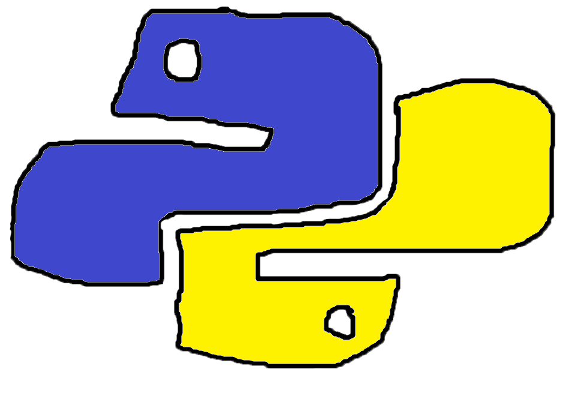Unit 1: Basics
mathRunner
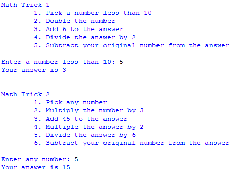This purpose of this code was to perform multiple math operations on a set of integers. The code first asks the user to input an integer less than 10. The number will be doubled, added to 6, divided by 2, and the original number will be subracted. The end result will always be 3. For the second math trick any number can be input by the user. That number will be multiplied by 3, added to 45, multiplied by 2, divided by 2, and subtracted by the original number. The result of this trick will always be 15.
Concepts Learned
- Input - When the code asks the user to put in a number, it's asking for input. It sets a variable to an input after asking the user: num = input("Enter a number less than 10")
- Math Operations - A new variable would be defined by a previous variable being added or multiplied: doublenum = int(num)*2
- Import - mathRunner was the program being executed, but mathTricks was the code where the math operations were. It needed to be imported into mathRunner: from mathTricks import *
LabRunner
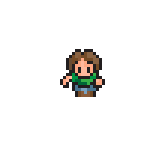In this lab, a person code and sprite were loaded in. In the person code, a person class is defined with variables of self, x, and y. A gif file is loaded as the sprite image and draw and movemt methods are defined. A piece of code is added so that the sprite cannot leave the boundaries of the window. The movement methods are connected to the arrow keys. The code constantly updates, the background and person are being redrawn so that no 'residue' is left behind.
Concepts Learned
- Class - A class is like a blueprint. It gives variables and definitions to be filled out. For example, a car class would have variables of color, size, and price and it would have methods like drive and sell.
- Methods - When creating a "blueprint", a method is used to define an action that will be called over and over.
- User Input - An if statement checks if a certain key is pressed, and an action is followed out if it is.
Unit 2: If Statements
WallRunner
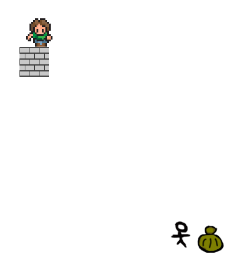For this program, two movable sprites and two immoble sprites were loaded in. The movable sprites could be moved with the WASD and arrow keys. The movable sprites correspond with an immobile sprite and collide. Both sprites also cannot leave the boundaries of the pygame window.
Concepts Learned
- Collision - In each of the class files, they had a 'getRec' method, which drew the hitboxes for each of the objects. Detecting the collisions would be done when detecting if the arrow keys are pressed.
- Area Detection - In order to have it so that the sprites cannot leave the pygame window, a piece of code is inserted into the movement detection. It senses if the sprites x and y values are less than the dimensions for the window boundaries.
LineRunner
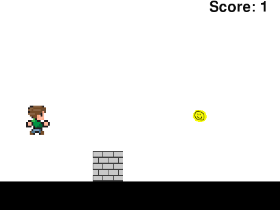In this program, a movable sprite is loaded in along with two 'unmovable' sprites. The player can control a guy with the goal to jump over all of the wall obstacles. The two unmovable sprites are a wall and a coin. They both move towards the player but are deleted if they reach the edge of the window without touching the player. The wall causes the player to lose the game while the coin will increase the player's score. When the unmovable objects are deleted, they spawn in front of the player off screen.
Concepts Learned
- Text - A textbox was created to display the score and tell the player if they lost.
- Constant Movement - The unmovable objects were given y coordinates set off screen. As long as gameEnd was false, the y coordinates would constantly decrease until it reaches the border until then it will reset position.
Unit 3: Loops
Timer
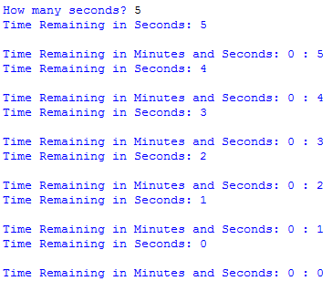Here, the program asks the user for how many seconds, then it display a countdown until it hits zero. It will display the time remaining in both minutes and seconds and just seconds alone.
Concepts Learned
- Integer and String Input - The answer that the user puts in is converted into an integer so that is can be affected by math operations. Every seconds that passes, the current integer is converted to a string so that it can be displayed via text.
- While - As long as the number of seconds left is more than zero, one is subtracted from the value every second and the value printed.
GroundRunner
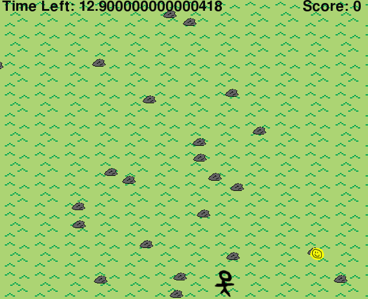In this program, the player controls the guy and they collect five coins before the timer gets to zero. Everytime that the player touches the coin, it goes to a different location. The rocks in the background are randomly generated throughout the window. The player also cannot leave the window like previous games.
Concepts Learned
- Background Generation - Rock and grass sprites are loaded into a ground class. The grass is drawn every 50 units and the rocks are drawn in a range from (0-790, 0-650).
- Random - The coin will spawn randomly after the player touches it. The coin's x and y functions are set to random.randint(0, 600). This means that the coordinates will be somewhere between 0 and 600.
Unit 4: Lists
GroundRunner2
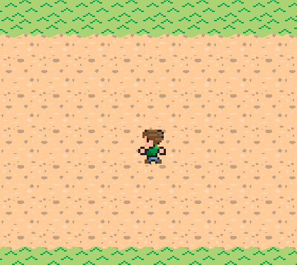This program is similar to the previous, but instead of randomized rocks in the background, a road is drawn when the y is 150-450. The player also changes sprites whenever he faces a different direction.
Concepts Learned
- Multiple Costumes - Multiple sprites are loaded into each class(ground or guy). The ground script keeps track of the y, and when it is a certain value, it displays a different costume. The different costumes for the guy are called on in the move functions.
DodgeRunner
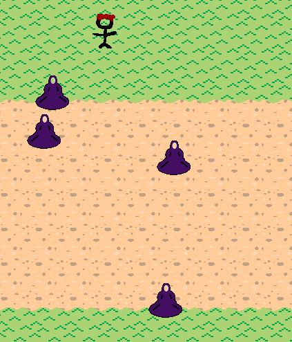The game uses the same background as GroundRunner2. The player controls the same character as before. A list of enemies that go from left to right across the screen is created. If the player touches an enemy, they will lose. Their goal is to get to the bottom of the screen.
Concepts Learned
- Lists - A list of enemies is created, containing their coordinates and the direction and speed that thy move. If they reach the end of the screen, they will be destroyed and recreated somewhere else.
Final
Don't Hit that Dude!
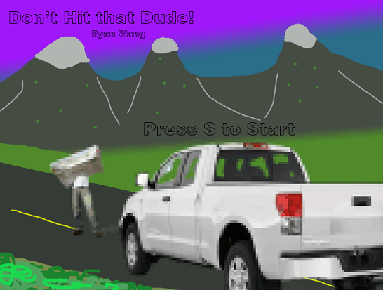 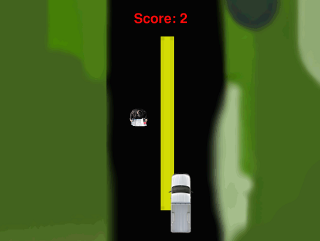This game is an 'infinite' runner with a scrolling background where you try to avoid hitting the people on the road. The dudes on the road are a part of the list that the enemies were from the DodgeRunner. When they reach the bottom of the screen, they disappear and reappear at the top. The score increases by one when this happens. Whenever the score is divisible by 5, another guy appears. When you reach 25 score, you will 'win'. The game will go on until you hit a person though.
Concepts Learned
- Title Screen - A title graphic is loaded and a variable gameStart is created. The variable is set to false and will turn true once the s key is pressed. Until then, only the title screen will be displayed. The rest of the game will only load if gameStart becoems true.
- Scrolling Background - A background graphic is loaded in twice. The y of one constantly increases until it hits a set limit. Then it will restart. The second graphic will cover up until the first one starts over.
- Global variables - A score variable is created in the 'people' class. This score increases by one whenever a guy reaches the bottom of the screen. Since the textis created in the truckRunner program, the score variable needs to be returned in the people class in order to be used in other programs